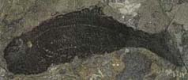
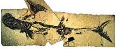
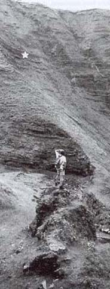

Where do you go? YOU decide....
Lesmahagow (Anaspid)?

Many important collections of Silurian arthropods and vertebrates have been made near Lesmahagow since the mid to late 1800‘s. It is now very difficult to obtain permission to collect from these rocks as a result of inappropriate collecting. It is still possible to find fossils from these rocks, but all fossils are rare and some may be usefully donated to a museum for research.The Lesmahagow Inlier is a block of Silurian sediments surrounded by sediments of Carboniferous age. The inlier consists of shales and sandstones with occasional pebble conglomerates of a lagoon or lake. The lower parts of the succession contain occasional marine fossils, including trilobites and brachiopods, but the higher parts of the succession lack any evidence of marine incursions becoming influenced more by river and deltaic conditions.
Bearsden (Akmonistion)?

At Bearsden, near Glasgow, a fossil conglomerate termed Carboniferous by age is found. Marine and freshwater strata are interlaced; marine and non-marine life-forms are present, not necessarily tied to their "appropriate" rock strata (land plants and marine animals are mixed); crustacean and shark fossils (rapidly decomposable) are found in high degree of preservation [7A]. Though often the material of coal beds, they are not carbonized. A series of tidal thrusts is to be assumed; further, coalification does not occur, it appears, unless an independent heated element is added before or after dumping. The evidence is consistent with the catastrophic theory of coal formation.
Lot‘s Wife (Pederpes)?

Plumb in the middle of Romer's Gap in 350 MY old deposits, this is where Pederpes was found.